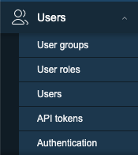

Frontend expliqué
Ce chapitre va couvrir les bases que vous devez connaître à propos de l'interface utilisateur de Zabbix et les choses que vous devez savoir avant de pouvoir commencer à exploiter pleinement votre outil de surveillance. Nous verrons comment fonctionne l'interface utilisateur, comment ajouter un hôte, des groupes, des utilisateurs, des éléments... afin d'avoir une bonne compréhension des bases. C'est quelque chose qui est parfois oublié et qui peut conduire à des frustration, ne pas savoir pourquoi les choses ne fonctionnent pas comme nous l'avions prévu. Donc, même si vous êtes un utilisateur avancé, il peut être utile de jeter un coup d'oeil à ce chapitre.
Commençons
Aperçu de l'interface
Avec Zabbix 7, l'interface de connexion utilisateur a légèrement changé. Notre menu sur le côté gauche de l'écran a été légèrement remanié. Voyons cela de plus près. Lorsque nous nous connectons à notre installation Zabbix pour la première fois avec notre utilisateur Admin, nous voyons une page
comme ceci où nous avons la fenêtre principale en
vert le menu principal marqué en
rouge et les liens marqués en
jaune.

2.1 Vue d'ensemble
Le menu principal peut être caché en le réduisant complètement ou en le réduisant à un ensemble de petites icônes. En cliquant sur le bouton avec les 2 flèches à gauche :
2.2 Réduction
Vous verrez que le menu se réduit à un ensemble de petites icônes. En appuyant
sur ">>", le menu principal de reviendra à son état d'origine.
En cliquant sur l'icône qui ressemble à une boîte avec une flèche qui dépasse, à
côté du bouton "<<", vous masquerez complètement le menu principal .

2.3 Masquer
Pour revenir à votre menu principal , c'est assez facile, il suffit de
chercher le bouton à gauche avec trois lignes horizontales et de cliquer dessus.
Cela affichera le menu principal mais il ne restera pas. Lorsque nous cliquons
sur la boîte avec la flèche pointant vers le bas à droite, le menu principal
est remis à sa place.
Une autre façon d'agrandir l'écran, très utile pour les moniteurs NOC Teams
par exemple, est le bouton kiosk mode. Celui-ci est situé sur le côté gauche
de l'écran et ressemble à 4 flèches pointant vers chaque coin de l'écran. En
appuyant sur ce bouton, tous les menus disparaissent et il ne reste plus que la
fenêtre principale sur laquelle vous pouvez vous concentrer.
2.4 Élargir
Lorsque nous voulons quitter le mode kiosque, le bouton sera remplacé par 2 flèches pointant vers l'intérieur de l'écran. En appuyant sur ce bouton, nous reviendrons à l'état d'origine.

2.5 Réduire
Tip
We can also enter and exit kiosk mode by making use of parameters in our Zabbix
url: /zabbix.php?action=dashboard.view&kiosk=1 - activate kiosk mode or
/zabbix.php?action=dashboard.view&kiosk=0 - activate normal mode.
Note
There are many other page parameters we can use. A full list can be found at https://www.zabbix.com/documentation/7.4/en/manual/web_interface/page_parameters Zabbix also has a global search menu that we can use to find hosts, host groups and templates.
Si nous tapons dans la boîte de recherche le mot server vous verrez que nous
obtenons une vue d'ensemble de tous les templates, host groups et hosts
avec le serveur de nom dedans. C'est pourquoi on l'appelle la boîte de
recherche globale .

2.6 Recherche globale
Voici notre résultat après avoir cherché le mot serveur. Si vous avez une
configuration Zabbix standard, votre page devrait ressembler plus ou moins à la
même chose.

2.7 Résultat de la recherche globale
Menu principal
Nous allons maintenant examiner brièvement les éléments du menu principal de
l'application. Le menu principal , situé sur l'interface de gauche, comprend
au total neuf sections distinctes :
| Nom du menu | Détails |
|---|---|
| Tableaux de bord | Contient un aperçu de tous les tableaux de bord auxquels nous avons accès. |
| Monitoring | Nous montre les hôtes, les problèmes, les dernières données, les cartes, ... |
| Services | Une vue d'ensemble de tous les services et des paramètres SLA. |
| Inventaire | Une vue d'ensemble de nos données d'inventaire collectées. |
| Rapports | Affiche les informations système, les rapports planifiés, les journaux d'audit, les journaux d'action, etc. |
| Collecte de données | Contient tout ce qui est lié à la collecte de données comme les hôtes, les modèles, la maintenance, la découverte, ... |
| Alerte | La configuration de nos types de médias, scripts et actions |
| Utilisateurs | Configuration des utilisateurs comme les rôles d'utilisateurs, les groupes d'utilisateurs, l'authentification, les accès à l'API, ... |
| Administration | La partie administration contenant tous les paramètres globaux, housekeeper, proxies, file d'attente, ... |
Menu des liens
Immédiatement à côté du menu principal de l'application, sur la gauche de
l'interface, se trouve le menu Links. Ce module fournit une collection
d'hyperliens utiles pour les utilisateurs.
| Nom du menu | Détails |
|---|---|
| Support | Ceci nous amène à la page de support technique que vous pouvez acheter chez Zabbix. N'oubliez pas que votre partenaire local est également en mesure de vendre ces contrats et peut vous aider dans votre propre langue. Vos distributeurs locaux |
| Intégrations | La [page d'intégration] officielle de zabbix (https://www.zabbix.com/integrations) |
| Aide | Le lien vers la documentation de votre version Zabbix |
| Paramètres de l'utilisateur | Les paramètres du profil de l'utilisateur. |
| Déconnexion | Déconnexion de la session en cours. |
Quelques éléments interactifs restent à traiter dans la partie droite de l'écran.

2.8 Editer le tableau de bord
Le bouton Edit dashboard facilite la modification de la configuration du
tableau de bord de l'utilisateur, une fonctionnalité qui sera développée dans
les sections suivantes. L'activation de cette icône redirige l'utilisateur vers
le portail de documentation de Zabbix, qui fournit des informations détaillées
sur les fonctionnalités du tableau de bord. Inversement, le contrôle situé dans
la marge de droite, représenté par trois lignes horizontales, permet d'accéder à
des opérations telles que le partage, le renommage et la suppression des
tableaux de bord définis par l'utilisateur.
Informations sur le système
Le tableau de bord comporte également un panneau dédié intitulé System
Information. Ce widget fournit une vue d'ensemble en temps réel de l'état
opérationnel du déploiement de Zabbix. Nous allons maintenant examiner les
différents points de données présentés dans ce panneau, car leur interprétation
est cruciale pour la compréhension du système.

2.9 Informations sur le système
| Paramètre | Valeur | Détails |
|---|---|---|
| Le serveur Zabbix fonctionne | Le statut de notre serveur zabbix s'il fonctionne ou non et s'il est en localhost ou sur une autre IP et sur quel port il écoute. Si aucun trappeur n'est à l'écoute, le reste de l'information ne peut pas être affiché | IP et port du serveur Zabbix |
| Version du serveur Zabbix | Ceci nous montre la version du serveur Zabbix donc la version que vous voyez en bas de votre écran est celle du frontend Zabbix et peut être différente mais devrait être dans la même version majeure. |
Version Number |
| Version du frontend de Zabbix | Il s'agit de la version du frontend et elle doit correspondre à ce que vous voyez en bas de votre écran. | Version Number |
| Nombre d'hôtes (activé/désactivé) | Le nombre total d'hôtes configurés sur notre système | Combien d'entre eux sont activés et désactivés |
| Nombre de modèles | Le nombre de modèles installés sur notre serveur Zabbix. | |
| Nombre d'éléments (activés/désactivés/non pris en charge) | Cette ligne nous indique le nombre d'éléments que nous avons configurés au total, dans ce cas 99 | 90 sont activés et 0 sont désactivés, mais 9 d'entre eux ne sont pas pris en charge. Ce dernier chiffre est important car il s'agit d'éléments qui ne fonctionnent pas. Nous verrons plus tard pourquoi cela se produit et comment y remédier. Pour l'instant, rappelez-vous qu'un nombre élevé d'éléments non pris en charge n'est pas une bonne idée. |
| Nombre de déclencheurs (Activé/désactivé [problème/ok]) | Le nombre de déclencheurs configurés | Nombre de déclencheurs activés et désactivés. Tout comme pour les éléments, nous voyons également si des déclencheurs sont dans un état problématique ou dans un état correct. Un déclencheur dans un état problématique est un déclencheur qui ne fonctionne pas, quelque chose que nous devons surveiller et corriger. Nous reviendrons sur ce point plus tard. |
| Nombre d'utilisateurs (en ligne) | Nous voyons ici le nombre d'utilisateurs qui sont configurés sur notre système | Le nombre d'utilisateurs actuellement en ligne. |
| Performance requise du serveur, nvps | Le nombre de nouvelles valeurs que Zabbix traitera par seconde. | Il s'agit d'une estimation car certaines valeurs sont inconnues et la valeur réelle est donc probablement plus élevée. Nous pouvons donc avoir une idée du nombre d'IOPS dont nous avons besoin et de la charge de notre base de données. Une meilleure indication est probablement l'élément interne zabbix[wcache,values,all] |
| Scripts globaux sur le serveur Zabbix | Cela nous informe que les scripts globaux sont activés ou désactivés dans la configuration du serveur. | Les scripts globaux peuvent être utilisés dans le frontend, les actions, ... mais doivent être activés au préalable. |
| Cluster haute disponibilité | It will show us if Zabbix HA cluster is disabled or not | Failover delay once HA is activated |
Enabling Global script execution
Global script execution on Zabbix server can be enabled by setting
EnableGlobalScripts=1 in the Zabbix server configuration at /etc/zabbix/zabbix_server.d/.
For new installations, since Zabbix 7.0, global script execution is
disabled by default.
Tip
System information may display some additional warnings like:
- when your database doesn't have the correct character set or collation UTF-8.
- when the database you used is lower or higher then the recommended version or
- when there are misconfigurations on housekeeper or TimescaleDB.
Another warning you can see is about database history tables that aren't upgraded or primary keys that have not been set. This is possible if you are coming from an older version before Zabbix 6 and never did the upgrade.
The main menu explained
It's important to know that we have seen so far our dashboard with the Admin
user and that this user is a Zabbix Super Admin user. This has a serious
impact on what we can see and do in Zabbix as this user has no restrictions.
Zabbix works with 3 different levels of users we have the regular users,
Zabbix Admin and Zabbix Super Admin users. Let's have a deeper look at the
differences :

2.10 Main menu sections
- A
Zabbix Userwill only see the red part of ourmain menuand will only be able to see our collected data. - A
Zabbix Adminwill see the red part and the yellow part of themain menuand is able to change our configuration. - A
Zabbix Super Adminwill see the completemain menuand so is able to change the configuration and all the global settings.

2.11 Monitoring menu
- Problems: This page will give us an overview of all the problems. With filter we can look at recent problems past problems and problems that are active now. There are many more filters tor drill down more.
- Hosts: This will give us a quick overview page with what's happening on our hosts and allows us to quickly go to the latest data, graphs and dashboards.
- Latest data: This page I probably use the most, it shows us all the information collected from all our hosts.
- Maps: The location where we can create map that are an overview of our IT infrastructure very useful to get a high level overview of the network.
- Discovery: When we run a network discovery this is the place where we can find the results.

2.12 Services menu
- Services: This page will give us a high level overview of all services configured in Zabbix.
- SLA: An overview of all the SLAs configured in Zabbix.
- SLA Report: Here we can watch all SLA reports based on our filters.

2.13 Inventory menu
- Overview: A place where we can watch all our inventory data that we have retrieved from our hosts.
- Hosts: Here we can filter by host and watch all inventory data for the hosts we have selected.

2.14 Inventory menu
- System information: System information is a summary of key Zabbix server and system data.
- Scheduled reports: The place where we can schedule our reports, a
pdfof the dashboard that will be sent at a specified time and date. - Availability report: A nice overview where we can see what trigger has
been in
ok/nokstate for how much % of the time - Top 100 triggers: Another page I visit a lot here we have our top list
with triggers that have been in a
NOKstate. - Audit log: An overview of the user activity that happened on our system. Useful if we want to know who did what and when.
- Action log: A detailed overview of our actions can be found here. What mail was sent to who and when ...?
- Notifications: A quick overview of the number of notifications sent to each user.

2.15 Data collection
- Template groups: A place to logical group all templates together in different groups. Before it was mixed together with hosts in host groups.
- Host groups: A logical collection of different hosts put together. Host groups are used for our permissions.
- Templates: A set off entities like items and triggers can be grouped together on a template, A template can be applied to one or more hosts.
- Hosts: What we need in Zabbix to monitor A host, application, service ...
- Maintenance: The place to configure our maintenance windows. A maintenance can be planned in this location.
- Event correlation: When we have multiple events that fires triggers related we can configure correlations in this place.
- Discovery: Sometimes we like to use Zabbix to discover devices, services,... on our network. This can be done here.

2.16 Alerts menu
- Actions: This menu allows us to configure actions based on
eventsin Zabbix. We can create such actions for triggers, services, discovery, autoregistration and internal events. - Media types: Zabbix can sent messages, emails etc ... based on the actions we have configured. Those media types need templates and need to be activated.
- Scripts: In Zabbix it's possible to make use of scripts in our actions and frontend. Those actions need to be created here first and configured.

2.17 Users menu
- User groups: The
User groupsmenu section enables the creation and management of user groupings for streamlined access and permission control. - User roles: The
User rolesmenu section defines sets of permissions that can be assigned to individual users, limiting their allowed actions based on the user type they have within the system. - Users: The
Usersmenu section provides the interface for managing individual user accounts, including creation and modification settings. - API tokens: The
API tokensmenu section manages authentication credentials specifically designed for programmatic access to the system's Application Programming Interface (API), enabling secure automation and integration with external applications. - Authentication: The
Authenticationmenu section configures the methods and settings used to verify user identities and control access to the system.

2.18 Administration menu
- General: The
Generalmenu section within administration allows configuration of core system-wide settings and parameters. - Audit log: The
Audit logmenu section provides a chronological record of system activities and user actions for security monitoring and troubleshooting. - Housekeeping: The
Housekeepingmenu section configures automated maintenance tasks for managing historical data and system performance. - Proxies: The
Proxiesmenu section manages the configuration and monitoring of proxy servers used for communication with managed hosts in distributed environments. - Macros: The
Macrosmenu section allows the definition and management of global variables for flexible system configuration. - Queue: The
Queuemenu section provides real-time insight into the processing status of internal system tasks and data handling.
Info
More information can be found in the online Zabbix documentation here
Tip
You will see that Zabbix is using modal forms in the frontend on many places.
The problem is that they are not movable. This
module created by one of the Zabbix developers UI Twix will solve this problem
for you.
Warning
At time of writing there is no Dashboard import/export functionality in zabbix. So when upgrading dashboards it needs to be created by hand. It was on the roadmap for 7 but didn't made it so feel free to vote https://support.zabbix.com/browse/ZBXNEXT-5419
Conclusion
The Zabbix frontend serves as the central command center for monitoring, configuration, and system awareness. In this chapter, you explored how to navigate its interface from dashboards and the customizable main menu to powerful tools like system information and global search. You learned how each menu section (Monitoring, Data Collection, Alerts, Users, Administration, and more) aligns with distinct functions, and how kiosk mode and layout controls help optimize visibility during daily operations.
Additionally, the system information widget stands out as a real time diagnostic snapshot, revealing critical metrics such as server status, number of hosts, templates, items, triggers, and user activity all of which aid rapid troubleshooting and performance assessment.
By mastering these frontend components, you're now better equipped to confidently navigate Zabbix, manage user access, interpret monitoring data, and maintain your environment more effectively. This foundational knowledge lays the groundwork for deeper exploration into host configuration, authentication mechanisms, and advanced monitoring workflows in the chapters that follow.
Questions
-
Which frontend section (Monitoring, Data Collection, Alerts, Users, or Administration) do you think you'll use most often in your daily work, and why?
-
How can kiosk mode be useful in a real-world monitoring environment, and what types of dashboards would you display with it?
-
What insights can the system information widget provide during troubleshooting, and how might it help identify issues with server performance?
-
Why is it important to understand the difference between data displayed in “Monitoring” and configuration options found in “Data Collection”?
-
If you were onboarding a new team member, which parts of the frontend would you show them first, and why?
URL utiles
- https://www.zabbix.com/documentation/current/en/manual/web_interface/frontend_sections/dashboards
- https://blog.zabbix.com/handy-tips-6-organize-your-dashboards-and-create-slideshows-with-dashboard-pages/17511/
- https://blog.zabbix.com/interactive-dashboard-creation-for-large-organizations-and-msps/30132/